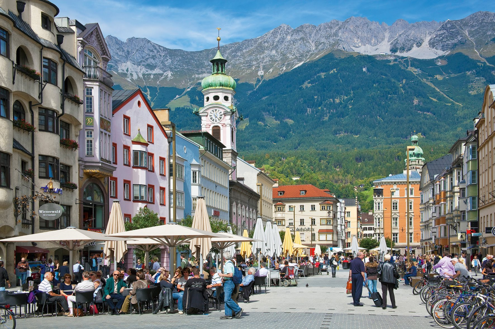

Австрия
Авиа туры, Автобусные туры, Горнолыжный отдых, Европа, Отдых с детьми, Страны шенгена, Экскурсионные туры
Это страна, которая способна подарить массу приятных эмоций и незабываемых впечатлений каждому туристу. Эту страну недаром считают раем для любителей активного отдыха и это не только: горнолыжные курорты в Австрии, которые известны на весь мир. Это также незабываемый рафтинг, дайвинг, серфинг, виндсерфинг и плавание под парусом, которые доступны практически весь год. Даже если вы любитель зимних видов спорта, но хотите посетить Австрию в теплое время года, это абсолютно не проблема. Существуют специальные санные горки, которые подарят вам незабываемые впечатления, это горный воздух, экстримальные ощущения и все это на фоне ярких, летних красок окружающей природы. Это еще одна из причин, из-за которой не стоит забывать и о летнем отдыхе, ведь в этой стране расположено множество различных мест для такого вида досуга. Наверняка каждый турист слышал о живописных озерах Тироля, пляжах в Каринтии, Зальцкаммергуте и Вене, где находятся одни из самых известных в мире баз отдыха.
Государство находится в центральной зоне Европы, поэтому предлагает всем желающим различные виды досуга, развлечений и даже лечения. Многие украинские туристы покупают путевки в Австрию, чтобы оздоровиться и набраться сил перед трудовыми буднями, множество санаториев способствуют полноценному, лечебному отдыху. Уникальная, неповторимая и интересная культура Австрии сможет удивить любого туриста, а сохранившееся с древних времен памятки архитектуры навсегда оставят след в памяти любителей истории.
Зимний отдых
И все же, отдельное внимание стоит уделить горнолыжным курортам Австрии. Если вы планируете провести свой отдых в Австрии, то обращайтесь в нашу туристическую фирму в Херсоне «Корсар», которой всегда есть что предложить даже самому требовательному туристу. Например, область Тироль, куда ежегодно съезжаются любители катания на лыжах. Это вовсе неудивительно, ведь там созданы комфортные и оптимальные условия для занятия любым видом зимнего спорта. Как вы наверняка помните, в самом конце 60-х годов прошлого столетия в Тироле проводились Олимпийские игры, которые подарили этой области массу трасс различной категории сложности, которые понравятся, как любителям, так и профессионалам. Также не стоит забывать и про лыжные школы, которых в этой области насчитывается целых 170 штук. Там работают профессиональные инструкторы, которые гарантированно смогут поставить на лыжи и научить на них кататься любого человека.
Наши туристы могут купить путевку в Австрию и в область Сан-Антон, которая также обладает немалой известностью в кругах лыжников и сноубордистов. Близлежащие к Сан-Антону склоны Альп определенно порадуют любителей активного времяпровождения. Сам же городок всегда готов радушно встретить любого туриста и предложить ему насыщенную экскурсионную программу. Вы всегда сможете остановится в уютных аппартаменах, ведь гостиницы в Австрии известны во всем мире.